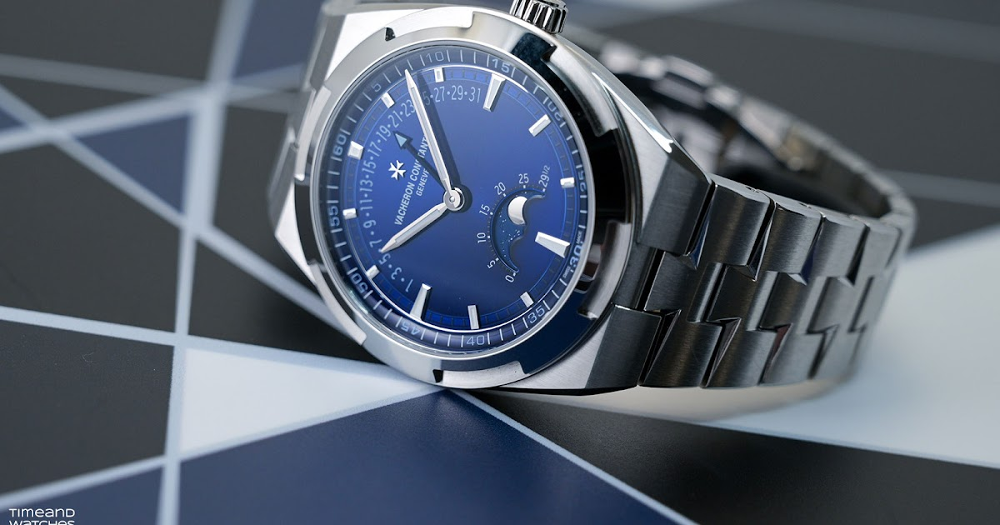

Vacheron Constantin Overseas Moon Phase Retrograde Date: Gdzie Precyzja Spotyka Elegancję
Vacheron Constantin, nazwa synonimiczna z luksusem i precyzją, przedstawił prawdziwy klejnot w świecie zegarmistrzostwa – Overseas Moon Phase Retrograde Date. Ten zegarek to nie tylko arcydzieło inżynierii, ale także oszałamiający dodatek do kolekcji Overseas, i to właśnie w nim po raz pierwszy pojawiło się wyświetlanie retrograde w tej prestiżowej serii zegarków.

Taniec Precyzji
Wyświetlanie retrograde to fascynująca cecha, w której wskaźnik nie wykonuje pełnego obrotu wokół tarczy. Zamiast tego przemierza segment, z wdziękiem wracając na swoje miejsce początkowe, aby rozpocząć nową podróż. Ten unikalny mechanizm wymaga wyjątkowej precyzji, zapewniając zarówno odporność na wstrząsy, jak i zużycie. Overseas Moon Phase Retrograde Date inkarnuje tę innowacyjną cechę, jednocześnie pozostając wiernym sportowemu i dynamicznemu kodowi estetycznemu kolekcji Overseas.
Elegancja w Detalu
Oryginalna przezroczysta niebieska tarcza lakierowana jest dziełem sztuki samą w sobie. Prezentuje na 6. godzinie precyzyjną fazę księżyca, posiadając powierzchnię w formie promienistej satynowanej tarczy oraz wykończony obrzeżem w wersji aksamitnej. Złote indeksy oraz wskazówki na godzinach, minutach i datę zyskują na czytelności w słabym oświetleniu dzięki niebieskiemu Super-LumiNova. To wyjątkowe połączenie elementów sprawia, że ten zegarek nie jest tylko narzędziem do mierzenia czasu, ale także dziełem sztuki noszonym na nadgarstku.
Precyzja na Nocnym Niebie
Apetura fazy księżyca, gradowana od 0 do 29½, pozwala odczytać liczbę dni od ostatniego nów. Mechanizm fazy księżyca jest tak precyzyjny, że wymaga tylko jednej korekty co 122 lata, podkreślając dbałość o detale i rzemiosło inwestowane w ten zegarek.
Rzemiosło w Stali Nierdzewnej
41 mm x 10,48 mm stalowa koperta to dowód na zaangażowanie Vacheron Constantin w precyzję i estetykę. Sześciokątny bezel przypomina krzyż maltański, a polerowane powierzchnie są przeplatane szczotkowanymi, tworząc harmonijny efekt wizualny. Wkręcana koronka z ryflowaniem gwarantuje odporność na wodę do ciśnienia 5 barów (około 50 metrów lub 165 stóp), sprawiając, że zegarek jest uniwersalny na różne okazje.
Serce Zegara
Przezroczysty szafirowy kryształ na odwrocie koperty odsłania mechaniczny mechanizm samonakręcający Calibre 2460 R31L/2 z wahadłem o masie 22K złota ozdobionym stylizowaną różą wiatrów. Ten pięknie wykończony mechanizm pracuje z częstotliwością 4 Hz (28 800 wibracji na godzinę) i oferuje rezerwę chodu wynoszącą 40 godzin. Wszystkie regulacje - nakręcanie, korekta daty i faz księżyca, a także ustawienie czasu - można dokonywać za pomocą koronki.
Uniwersalność Spotyka Styl
Zegarek dostarczany jest z bransoletą ze stali nierdzewnej i dwiema dodatkowymi opaskami z cielęcej skóry i niebieskiej gumy. Dzięki praktycznemu systemowi wymiany opasek/bransolety można je łatwo wymieniać w kilka sekund, pozwalając dostosować zegarek do różnych okazji i stylizacji.
Cenny Skarb
Chociaż cena nowego Vacheron Constantin Overseas Moon Phase Retrograde Date ref. 4000V/210A-B911 nie została jeszcze ujawniona, ten wyjątkowy zegarek jest dowodem na zaangażowanie marki w precyzję, rzemiosło i elegancję. Niezależnie od tego, czy jesteś kolekcjonerem, miłośnikiem, czy po prostu osobą ceniącą piękno w życiu, ten zegarek zdobędzie Twoje serce i podniesie poziom elegancji Twojego nadgarstka.
Podsumowanie
Vacheron Constantin Overseas Moon Phase Retrograde Date to nie tylko zegarek, to prawdziwe dzieło sztuki, które łączy w sobie precyzję, elegancję i innowację. Ten wyjątkowy model, pierwszy w kolekcji Overseas wyposażony w wyświetlanie retrograde, zachwyca zarówno miłośników zegarków, jak i pasjonatów sztuki zegarmistrzostwa.
Jego niebieska, przezroczysta tarcza zachwyca subtelnymi detalami, takimi jak precyzyjna faza księżyca o godzinie 6, a wszystko to na tle promienistej satynowanej powierzchni. Złote indeksy i wskazówki, podkreślone niebieskim Super-LumiNova, gwarantują doskonałą czytelność nawet w słabym oświetleniu.
Mechanizm fazy księżyca, wymagający korekty raz na 122 lata, to przykład doskonałego rzemiosła, które stoi za tym zegarkiem. Całość jest zamknięta w 41-milimetrowej kopercie ze stali nierdzewnej, ozdobionej charakterystycznym sześciokątnym bezelem przypominającym krzyż maltański.
To, co skrywa zegarek, jest równie imponujące. Szafirowy kryształ na tylnej stronie koperty odsłania mechanizm Calibre 2460 R31L/2, bijący z częstotliwością 4 Hz i oferujący rezerwę chodu wynoszącą 40 godzin.
Dodatkowo, zegarek jest wyposażony w praktyczny system wymiany opasek, co sprawia, że można łatwo dostosować go do różnych okazji i stylizacji.
Choć cena tego arcydzieła nie została jeszcze ujawniona, nie mogę ukryć, że osobiście uwielbiam ten zegarek. Vacheron Constantin Overseas Moon Phase Retrograde Date to nie tylko zegarek – to wyraz wyjątkowego kunsztu i pasji, który z pewnością podbije serca miłośników zegarków na całym świecie.